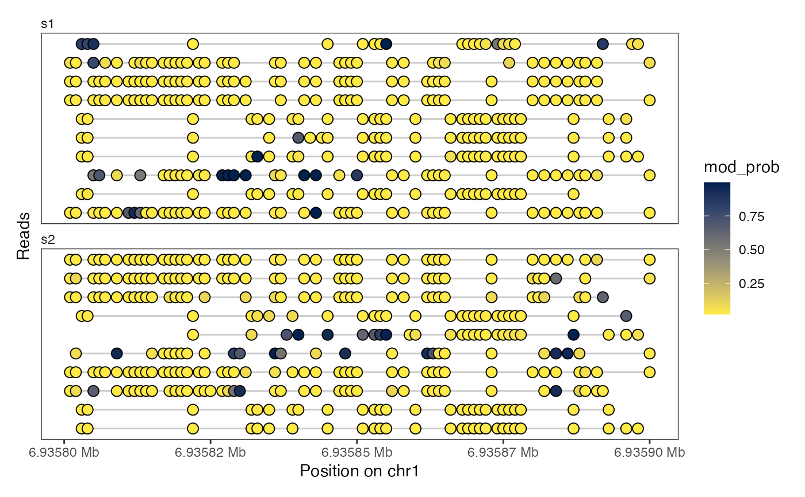
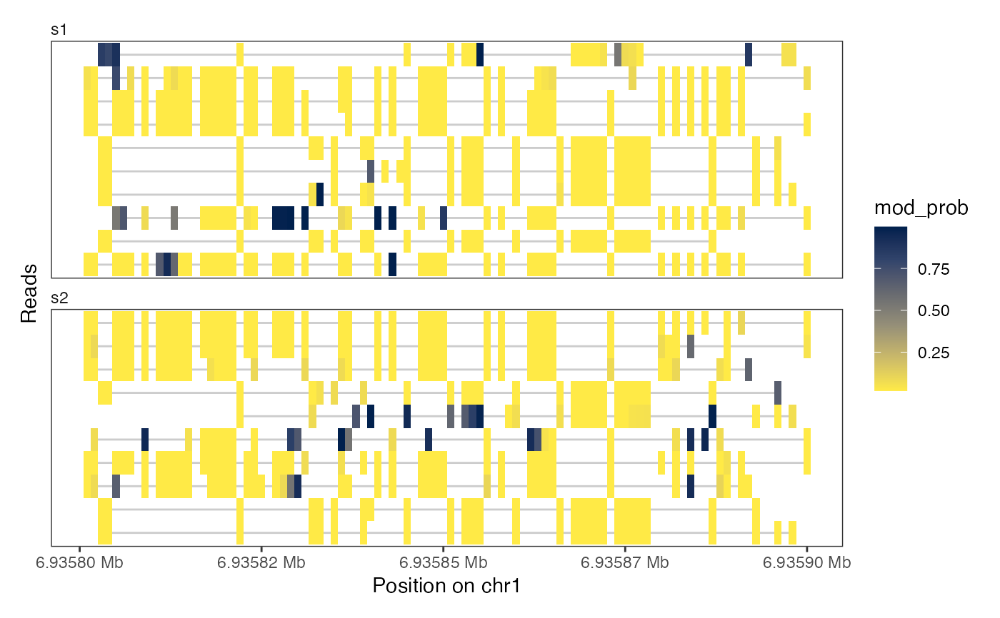
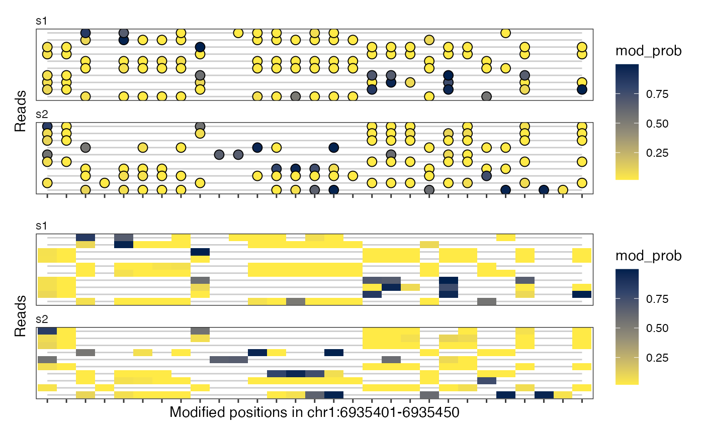

Plot single-molecule footprinting data for a single genomic region.
Source:R/plotRegion.R
plotRegion.RdThis function will visualize read-level or collapsed single-molecule
footprinting data, such as data imported using readModkitExtract
or readBedMethyl.
Usage
plotRegion(
se,
region = NULL,
tracks.reads = NULL,
tracks.summary = list(FracMod = "Point"),
modbaseSpace = FALSE,
sequence.context = NULL
)Arguments
- se
A
SummarizedExperimentobject with read-level or collapsed single-molecule footprinting data (positions in rows and reads or samples in columns).- region
A
GRangesobject with a single region. Only data fromseoverlapping this region will be plotted. Alternatively, the region can be specified as a character scalar (e.g. "chr1:1200-1300") that can be coerced into aGRangesobject. IfNULL(the default), all the data on the first sequence insewill be visualized.- tracks.reads
A named list where the names correspond to assay names of read-level assays in
seand the values are character vectors with the plot types to make for each assay. Currently supported plot types are:"Lollipop": Lollipop plot (filled circles with the color representing the values in the assay).
"Heatmap": Heatmap plot (tiles with the color represeting the values in the assay).
If
NULL, do not plot any read-level tracks.- tracks.summary
A named list where the names correspond to assay names of summarized data in
seand the values are character vectors with plot types to make for each assay. Currently supported plot types are:Point: A point plot displaying values in the assay.
Smooth: A smoothed line plot displaying values in the assay.
PointSmooth: A point and smoothed line plot displaying values in the assay.
If
NULL, do not plot any summary data tracks. A special case is the track name"FracMod": Ifsedoes not contain an assay of that name, but"Nmod"and"Nvalid"assays are available,"FracMod"will be calculated fromassay(se, "Nmod") / assay(se, "Nvalid").- modbaseSpace
A logical scalar. If
TRUE, the x-axis will be shown in the space of modified bases and contain only the positions at which there are modified bases in the data without any gaps between them. IfFALSE, the x-axis will show the genomic coordinate on which the modified bases are typically irregularly spaced.- sequence.context
A character vector with sequence context(s) to plot. Only positions that match one of the provided sequence contexts will be included in the plot. Sequence contexts can be provided using IUPAC redundancy codes. The sequence contexts of modified bases are obtained from
rowData(se)$sequence.contextand thus requires thatsecontains the appropriate information, for example by setting thesequence.contextandsequence.referencearguments ofreadBedMethylwhen it was generated, or by adding it usingaddSeqContext.
Value
A ggplot object with tracks selected by
tracks.reads and tracks.summary.
See also
readModkitExtract and readBedMethyl for
reading read-level and summarized footprinting data.
Examples
# summarized data (5mC)
bmfiles <- system.file("extdata",
c("modkit_pileup_1.bed.gz", "modkit_pileup_2.bed.gz"),
package = "footprintR")
reffile <- system.file("extdata", "reference.fa.gz", package = "footprintR")
seA <- readBedMethyl(bmfiles, sequence.context = 3, sequence.reference = reffile)
plotRegion(seA, region = "chr1:6940000-6955000", sequence.context = "GCH")
plotRegion(seA, region = "chr1:6940000-6955000", sequence.context = "HCG")
plotRegion(seA, region = "chr1:6940000-6955000",
tracks.summary = list(Nvalid = "Smooth"))
# read-level data (6mA)
extractfiles <- system.file("extdata",
c("modkit_extract_rc_6mA_1.tsv.gz",
"modkit_extract_rc_6mA_2.tsv.gz"),
package = "footprintR")
seB <- readModkitExtract(extractfiles, modbase = "a", filter = "modkit")
plotRegion(seB, region = "chr1:6935800-6935900",
tracks.summary = NULL,
tracks.reads = list(mod_prob = "Lollipop"))

plotRegion(seB, region = "chr1:6935800-6935900",
tracks.summary = NULL,
tracks.reads = list(mod_prob = "Heatmap"))

plotRegion(seB, region = "chr1:6935400-6935450",
tracks.summary = NULL,
tracks.reads = list(mod_prob = c("Lollipop", "Heatmap")),
modbaseSpace = TRUE)
